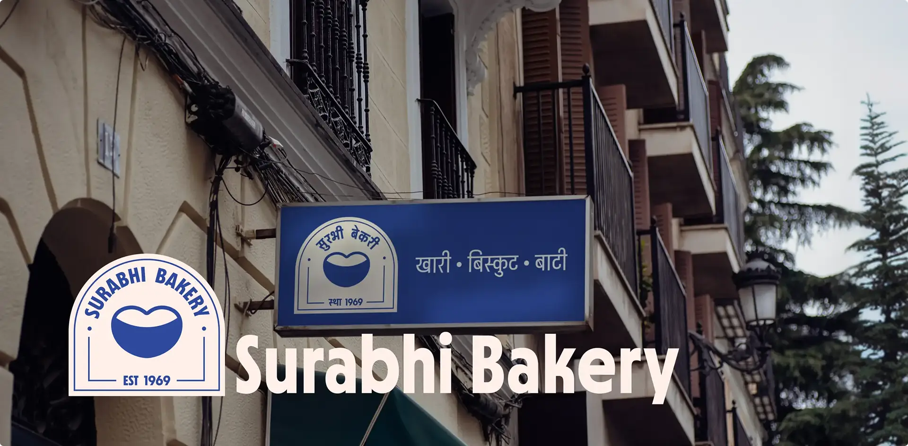
Surabhi Bakery
Handmade every morning. Wood‑fired. Honest ingredients
A 55+ year-old neighbourhood bakery located in the old city of Jodhpur. Known for its handmade biscuits, khari, nankhatai, and everyday baked goods, the brand has built strong trust within the local community, especially among working-class customers.
This project focused on creating a cohesive and scalable brand identity system that preserves Surabhi's heritage while improving its visual clarity, communication, and overall perception.
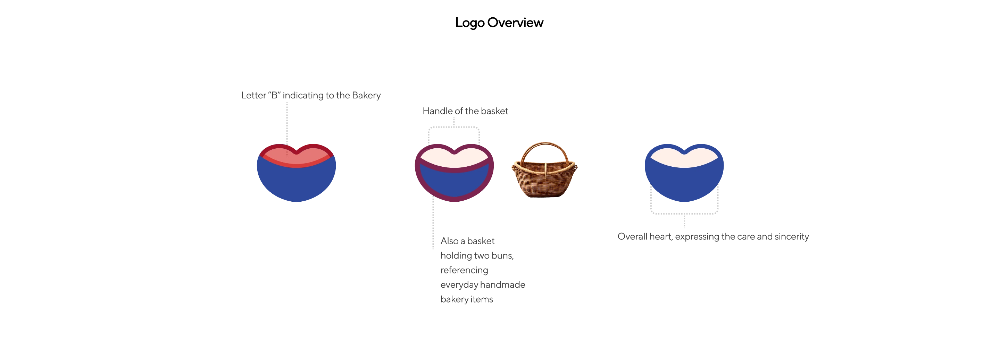
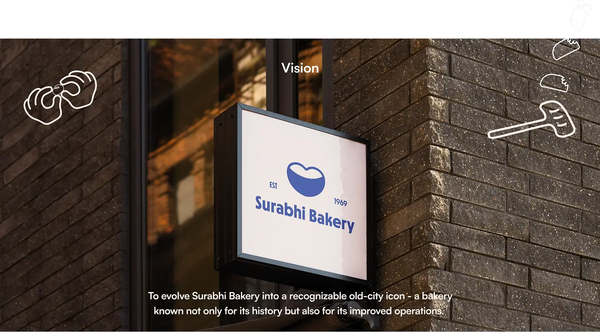
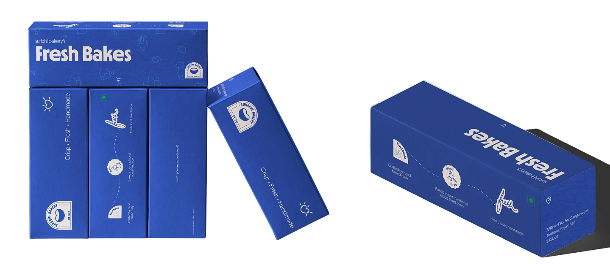
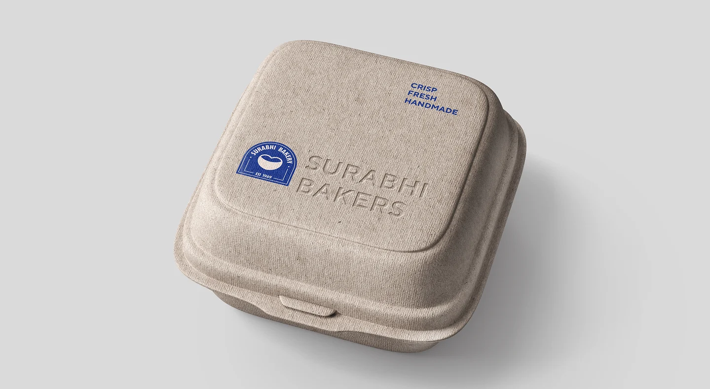
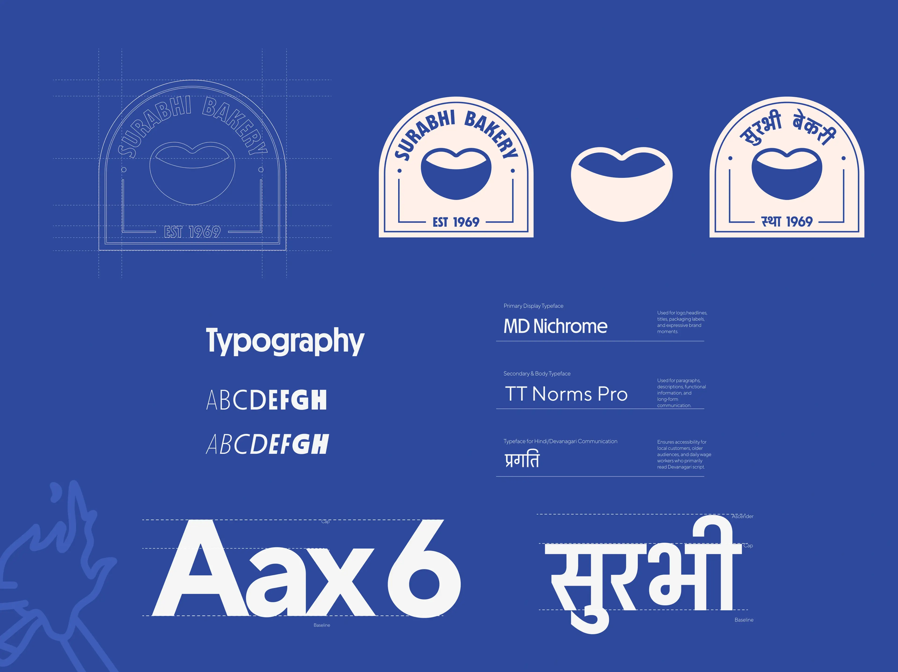
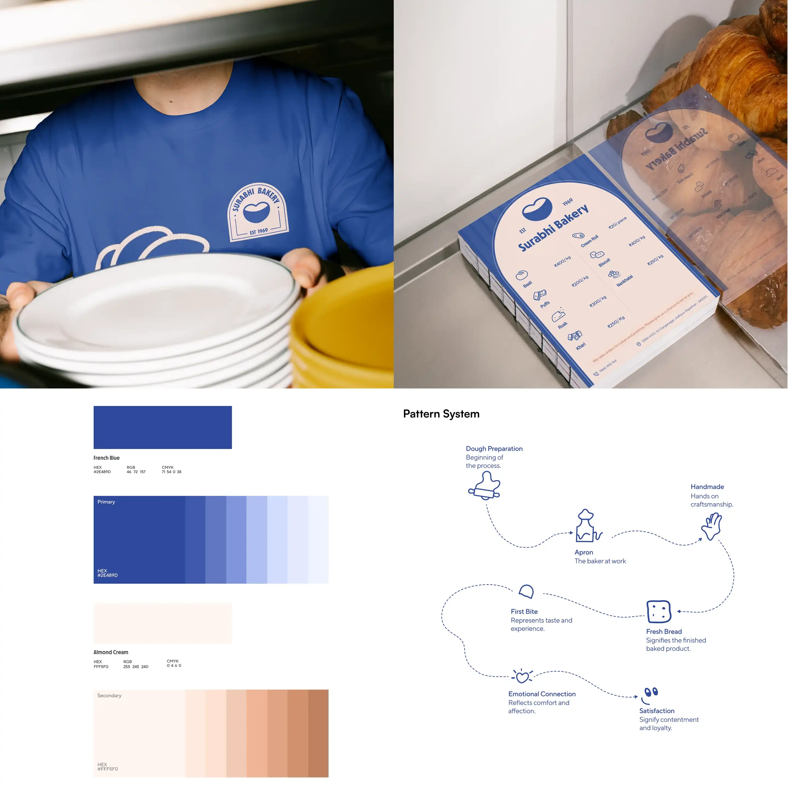
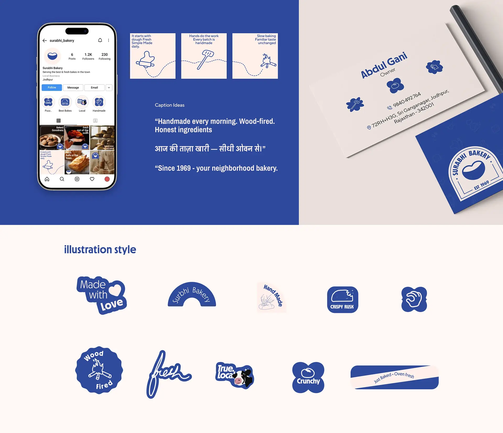
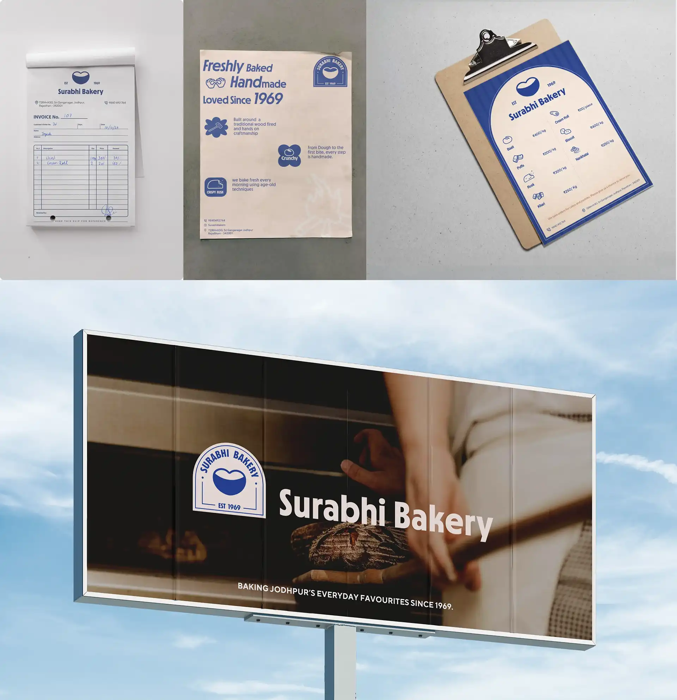
Surabhi Bakery is a functional, no-frills space with high-quality products but lacks a consistent visual identity. Discovered organically in Old Jodhpur, the brand's strength lies in its sensory authenticity rather than its branding. The challenge was to translate its core values—handmade craft, affordability, and community trust—into a cohesive design system that respects its roots while providing the clarity needed to compete with modern bakeries.
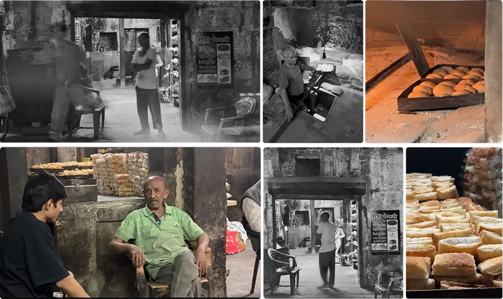
We explored three creative paths and chose the one that most authentically reflects Surabhi's raw, timeworn legacy and 55-year history.
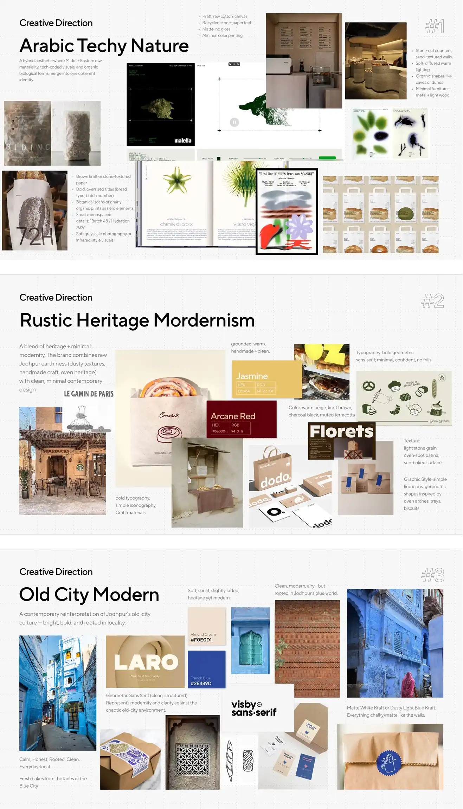